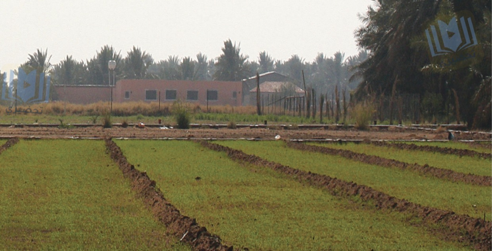

🔬 مختبر التربة الرقمي العلوم • الصف السادس • الفصل السادس – الدرس الأول: التربة • ص١٦٥–١٧٣ ⭐ نجوم المستكشفة: ٠ 🛂 جوازي 💚 أ/ شامه البقمي ⛶
مختبر التربة الرقمي الدرس الأول: التربة • رحلة من حبّة الرمل إلى أعماق الأرض
🔑 ادخلي المختبر
التهيئة
أنظرُ وأتساءلُ 📖 ص١٦٦

هذهِ النباتاتُ حديثةُ النموِّ. تنمو النباتاتُ بشكلٍ جيدٍ في بعضِ أنواعِ التربةِ، لكنَّها لا تنمو في أنواعٍ أخرى منَ التربةِ. ما الموادُّ الموجودةُ في التربةِ التي تساعدُ النباتَ على النموِّ؟
العصف الذهني – تقويم المعرفة السابقة
💭 ماذا تعرفين عن التربة؟ اكتبي أفكار زميلاتك:
➕
أسئلة مساعدة: ممَّ تتكوّن التربة؟ لماذا هي مهمة؟ ما الذي يضرّها؟
💡 أظهري الإجابة
الدُّبالُ (الموادُّ العضويةُ من بقايا المخلوقاتِ المتحلّلةِ)، والموادُّ الكيميائيةُ المغذيةُ الناتجةُ من تفكيكِ الصخورِ، والماءُ والهواءُ.
التهيئة
أهدافي ومفرداتي 📖 ص١٦٥، ١٦٨
في نهاية الدرس أستطيع أن:
أصفَ كيفَ تكوّنتِ التربةُ، وأقارنَ بينَ أنواعِها. أسمّيَ نطاقاتِ التربةِ وأصفَها. أتعرّفَ كيفَ تُستعمَلُ التربةُ، وكيفَ تتلوّثُ. أقترحَ طرقًا لحفظِ التربةِ.
❓ السؤال الأساسي: ممَّ تتكوّنُ التربةُ؟ وكيفَ نحافظُ عليها؟
أستكشف ١
المجهر الرقمي: فيمَ تختلفُ أنواعُ التربةِ؟ 📖 ص١٦٧
نشاط استقصائي – ١ ألاحظ أتفحّصُ كمّيّةً صغيرةً منْ كلِّ نوعٍ منَ التربةِ بعدسةٍ مكبّرةٍ، وألاحظُ حجمَ الحبيباتِ، واللونَ، وأيَّ موادَّ يمكنُني تعرُّفُها ، وأنظّمُ جدولًا أسجّلُ فيهِ ملاحظاتي.
📋 جدول ملاحظاتي: لاحظي أولًا… ثم اضغطي الخانة للتحقق
أستكشف ٢
تجربة التسرّب: أقيسُ وأقارنُ 📖 ص١٦٧
٤ أقيس أضيفُ ٥٠ مل منَ الماءِ إلى كلِّ كأسٍ، وأقيسُ كمّيّةَ الماءِ المتسرّبةِ كلَّ دقيقةٍ مدّةَ ٥ دقائقَ، وأسجّلُ نتائجي.
🤔 توقّعي: أيّها يتسرّب منه ماء أكثر؟ 💧 صبّي ٥٠ مل ⏱ ٠ دقيقة
📊 الماء المتسرّب (مل) – قيم توضيحية للمحاكاة
المحطة ١
ما التربةُ؟ وكيف تتكوّن؟ 📖 ص١٦٨
المحطة ٢
رحلةٌ إلى أعماق التربة: نطاقاتُ التربة 📖 ص١٦٩
🌳🌿🌼
النطاق أ
النطاق ب
النطاق ج
صخور غير مجوّاة
🔦
المحطة ٣
كيف تُستعمَلُ التربةُ؟ ولماذا تنجرف؟ 📖 ص١٧٠
أصنّف اختاري البطاقة ثم اضغطي على التربة المناسبة لها:
محاكاة التعرية «جذورُ النباتاتِ تثبّتُ التربةَ في مكانِها. وإذا زالتِ النباتاتُ فإنَّ تعريةَ التربةِ تزدادُ.»
🌧️ أمطري بغزارة
المحطة ٤
نشاط مكوّنات التربة • تلوّث التربة 📖 ص١٧١
🫙 رجّي الوعاء 🏷️ أسماء الطبقات
⚠️ التلوّثُ: إضافةُ موادَّ ضارّةٍ إلى التربةِ أوِ الماءِ أوِ الهواءِ. اضغطي كل مصدر:
المحطة ٥
كيف تتمُّ المحافظةُ على التربة؟ 📖 ص١٧٢
حمايةُ الموارد الطبيعية – ومنها التربةُ – والمحافظةُ عليها يسمّى حفظَ التربة . اضغطي الطريقة لتقرئي عنها:
⬇️ حراثة مع الميل 〰️ حراثة كنتورية
التقويم
مراجعةُ الدرسِ: أفكّرُ وأتحدّثُ وأكتبُ 📖 ص١٧٣
التقويم الختامي
بطاقةُ الخروج وجوازُ المستكشفة
🎫 بطاقة الخروج
١) لماذا تحتفظُ التربةُ الطينيةُ بالماءِ مدّةً أطولَ منَ التربةِ الرمليةِ؟
💡 الإجابة لأنَّ حبيباتِها دقيقةٌ جدًّا، فتكونُ المسافاتُ (المسامات) بينها صغيرةً، فيتسرّبُ الماءُ خلالها ببطءٍ.
٢) اقترحي طريقةً لحفظِ تربةِ مزرعةٍ على منحدرٍ، وفسّري اختيارك.
💡 الإجابة الحراثةُ الكنتوريةُ أوِ المصاطبُ (المدرجات)؛ لأنّها تقلّلُ منْ سرعةِ المياهِ المتدفّقةِ إلى أسفلِ المنحدرِ فلا تجرفُ التربةَ السطحيةَ.
قيّمي فهمك: ⭐⭐⭐ فهمت تمامًا • ⭐⭐ فهمت • ⭐ أحتاج مساعدة
🛂 جواز المستكشفة – أختام مختبر التربة
🇸🇦 ربط بالوطن: أطلقَتِ المملكةُ العربيةُ السعوديةُ مبادرةَ الشرقِ الأوسطِ الأخضرِ… لتنفيذِ أكبرِ برنامجِ إعادةِ تشجيرٍ في العالمِ (ص١٧١) . والأشجارُ تثبّتُ التربةَ بجذورِها! 🌳
التعزيز
افتحي ظرفك • القرعة • الختام
💌 افتحي ظرفك… رسالة تنتظرك
🌱 تعلّمتُ اليوم: التربةُ خليطٌ منْ فتاتِ الصخورِ وبقايا أوْ أجزاءِ نباتاتٍ ومخلوقاتٍ ميتةٍ • لها ثلاثةُ نطاقات • نحافظُ عليها منَ التعريةِ والتلوّث 💚